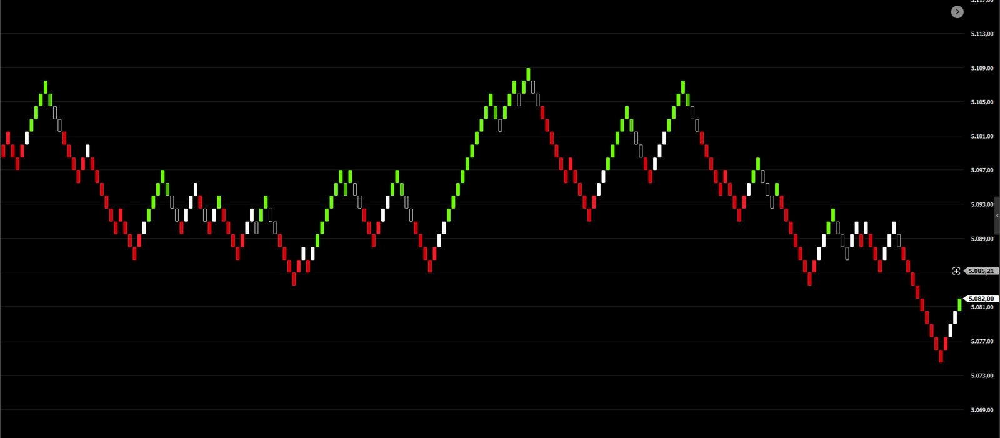

Colorações
Pintam os candles conforme a direção do movimento, para que a tendência seja reconhecida num relance.
DisponívelFerramentas visuais que mostram, de forma direta, para onde o preço está indo. Menos ruído no gráfico, mais clareza na hora de ler altas e quedas.
Cada ferramenta nasce de um estudo com dados do próprio mercado e só é publicada depois de validada em pregões que não foram usados para ajustá-la.
Pintam os candles conforme a direção do movimento, para que a tendência seja reconhecida num relance.
DisponívelLeituras complementares de força e momento do preço, pensadas para conviver com o gráfico sem poluí-lo.
Em desenvolvimentoRegras objetivas de entrada e saída, para quem quer automatizar a execução dentro do Profit.
Em breve
Coloração de tendência que pinta o gráfico de verde ou vermelho somente quando três médias concordam sobre a direção do preço.
Todos os produtos Onkel Geld são vendidos pela loja oficial da Nelogica, a mesma empresa do Profit Pro.
Acesse a busca da loja Nelogica já filtrada para Onkel Geld.
Leia a descrição, veja as imagens e confira os ativos e gráficos indicados.
Conclua a compra com a sua conta Nelogica e siga as orientações de ativação no Profit.